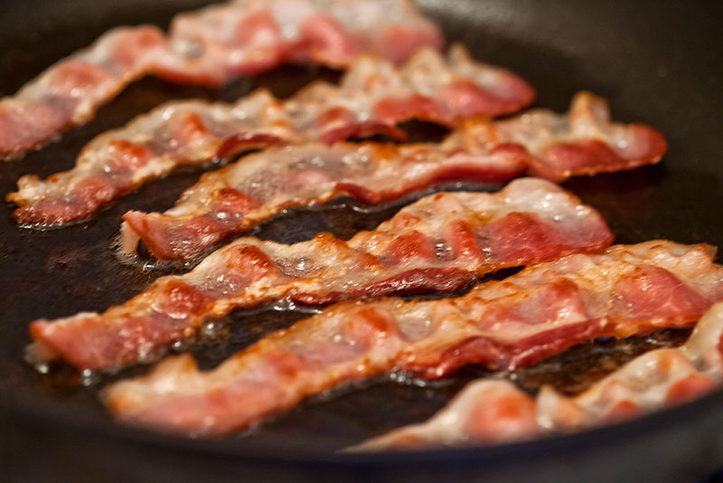
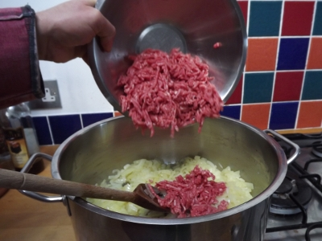
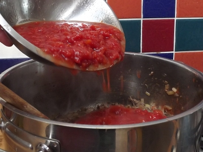
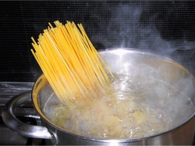
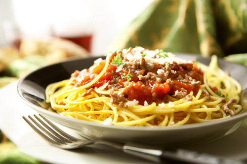

Ingredients
- 500g Fresh Beef Mince
- 400g Dried Spaghetti
- 4 Rashersof Smoked Streaky Bacon, finely diced
- 2 Tins of Plum/Chopped Tomatoes
- 6 Fresh Cherry Tomatoes
- 2 Medium Onions, peeled and finely diced
- 2 Sticks of Celery, trimmed and finely diced
- 2 Carrots, trimmed and finely diced
- 2 Cloves of Garlic, peeled and finely diced
- 1 Medium Chilli, seeded and finely diced
- 75g Freshly Grated Parmesan Cheese, plus extra for grating over.
- 2 tbsp Tomato Puree
- 1 Beef Stock Cube
- Glass of Red Wine (Optional)
- 2-3 Sprigs of Fresh Rosemary
- Handful of Fresh Basil, plus extra for Garnsih
- 1 tsp Dried Oregano
- 1-2 Fresh Bay Leaves
- Olive Oil
- Sea Salt and Black Pepper
- Crusty Bread, to serve
Method
1.
Get yourself a large heavy-bottomed saucepan, and place it on a medium heat. Add a good lug of olive oil and gently fry your bacon until golden and crisp, then reduce the heat slightly and add your onions, carrots, celery and garlic. Next remove the leaves from the Rosemary sprigs and add them to the pot, discarding the sprigs. Move everything around and fry for around 8-10 minutes until the veg has softened.
2.
Next, increase the heat slightly, add the mince and stir until the meat is browned all over.
3.
Stir in your tins of plum/chopped tomatoes, (plum tomatoes are best as they contain less water, but either will turn out great!). Add your remaining herbs, tomato puree, stock cube, chilli and if using, the wine. Slice your cherry tomatoes in half and throw them in aswell.
4.
Give everything a stir with a wooden spoon, breaking up the plum tomatoes as you go and bring to a gentle simmer. Reduce the heat to low-medium, put the lid on and leave it blipping away for about an hour and 15 minutes until the flavours develop into a wonderfully rich tomatoey sauce. Stir occasionally to make sure it doesn't catch.
5.
Just as the sauce is nearly ready, Add the parmesan and season to taste. Meanwhile add salt to a pan of boiling water and cook the spaghetti according the the packet instructions. Once the spaghetti is ready, drain it in a colander and add it to the pan with the sauce. Give it all a good stir, coating the pasta in the lovely tomato sauce. Serve with a little grated parmesan and use the extra basil leaves to make a great little garnish. Beautiful!
